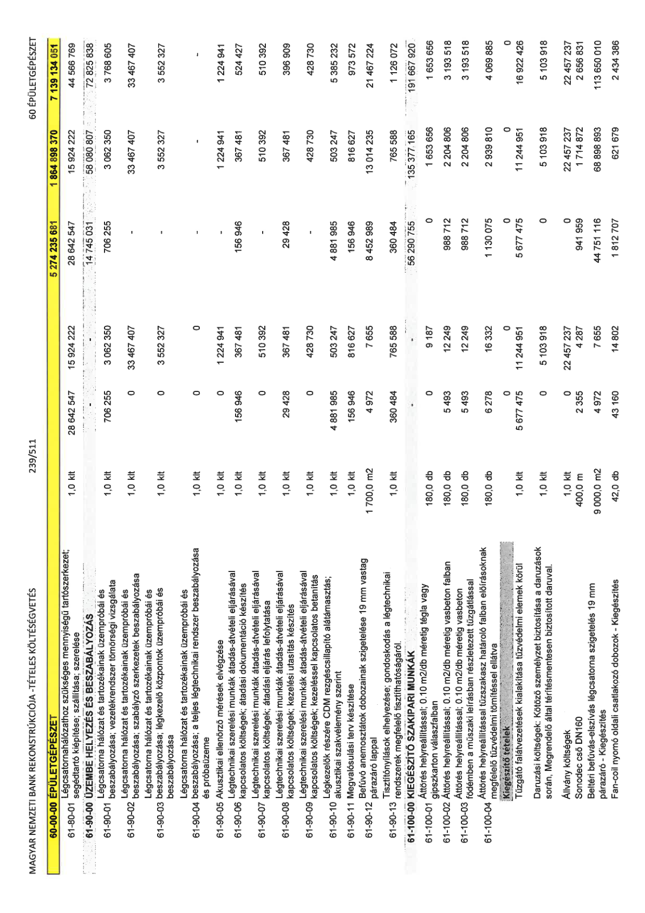

| Tétel | Menny. | Egys. | Anyag e.ár (net HUF) | Díj e.ár (net HUF) | Anyag összesen (net HUF) | Díj összesen (net HUF) | Anyag+Díj összesen (net HUF) |
|---|---|---|---|---|---|---|---|
| Légcsatornahálózathoz szükséges mennyiségű tartószerkezet; | 0 | 0 | 0 | 0 | 0 | 0 | 0 |
| 61-80-01 segédtartó kiépítése; szállítása; szerelése | 1,0 | klt | 28 642 547 | 15 924 222 | 28 642 547 | 15 924 222 | 44 566 769 |
| 61-90-00 ÜZEMBE HELYEZÉS ÉS BESZABÁLYOZÁS | 0 | 0 | 0 | 0 | 14 745 031 | 58 080 807 | 72 825 838 |
| Légcsatorna hálózat és tartozékainak üzempróbái és | 0 | 0 | 0 | 0 | 0 | 0 | 0 |
| 61-90-01 beszabályozása; vezetékrendszer tömörségi vizsgálata | 1,0 | klt | 706 255 | 3 062 350 | 706 255 | 3 062 350 | 3 768 605 |
| Légcsatorna hálózat és tartozékainak üzempróbái és | 0 | 0 | 0 | 0 | 0 | 0 | 0 |
| 61-90-02 beszabályozása; szabályozó szerkezetek beszabályozása | 1,0 | klt | 0 | 33 467 407 | 0 | 33 467 407 | 33 467 407 |
| Légcsatorna hálózat és tartozékainak üzempróbái és | 0 | 0 | 0 | 0 | 0 | 0 | 0 |
| 61-90-03 beszabályozása; légkezelő központok üzempróbái és beszabályozása | 1,0 | klt | 0 | 3 552 327 | 0 | 3 552 327 | 3 552 327 |
| Légcsatorna hálózat és tartozékainak üzempróbái és | 0 | 0 | 0 | 0 | 0 | 0 | 0 |
| 61-90-04 beszabályozása; a teljes légtechnikai rendszer beszabályozása és próbaüzeme | 1,0 | klt | 0 | 0 | 0 | 0 | 0 |
| 61-90-05 Akusztikai ellenőrző mérések elvégzése | 1,0 | klt | 0 | 1 224 941 | 0 | 1 224 941 | 1 224 941 |
| Légtechnikai szerelési munkák átadás-átvételi eljárásával | 0 | 0 | 0 | 0 | 0 | 0 | 0 |
| 61-90-06 kapcsolatos költségek; átadási dokumentáció készítés | 1,0 | klt | 156 946 | 367 481 | 156 946 | 367 481 | 524 427 |
| Légtechnikai szerelési munkák átadás-átvételi eljárásával | 0 | 0 | 0 | 0 | 0 | 0 | 0 |
| 61-90-07 kapcsolatos költségek; átadási eljárás lefolytatása | 1,0 | klt | 0 | 510 392 | 0 | 510 392 | 510 392 |
| Légtechnikai szerelési munkák átadás-átvételi eljárásával | 0 | 0 | 0 | 0 | 0 | 0 | 0 |
| 61-90-08 kapcsolatos költségek; kezelési utasítás készítés | 1,0 | klt | 29 428 | 367 481 | 29 428 | 367 481 | 396 909 |
| Légtechnikai szerelési munkák átadás-átvételi eljárásával | 0 | 0 | 0 | 0 | 0 | 0 | 0 |
| 61-90-09 kapcsolatos költségek; kezeléssel kapcsolatos betanítás | 1,0 | klt | 0 | 428 730 | 0 | 428 730 | 428 730 |
| Légkezelők részére CDM rezgéscsillapító alátámasztás; | 0 | 0 | 0 | 0 | 0 | 0 | 0 |
| 61-90-10 akusztikai szakvélemény szerint | 1,0 | klt | 4 881 985 | 503 247 | 4 881 985 | 503 247 | 5 385 232 |
| 61-90-11 Megvalósulási terv készítése | 1,0 | klt | 156 946 | 816 627 | 156 946 | 816 627 | 973 572 |
| Befúvó anemosztátok dobozainak szigetelése 19 mm vastag | 0 | 0 | 0 | 0 | 0 | 0 | 0 |
| 61-90-12 párazáró lappal | 1 700,0 | m2 | 4 972 | 7 655 | 8 452 989 | 13 014 235 | 21 467 224 |
| Tisztítónyílások elhelyezése; gondoskodás a légtechnikai | 0 | 0 | 0 | 0 | 0 | 0 | 0 |
| 61-90-13 rendszerek megfelelő tisztíthatóságáról. | 1,0 | klt | 360 484 | 765 588 | 360 484 | 765 588 | 1 126 072 |
| 61-100-00 KIEGÉSZÍTŐ SZAKIPARI MUNKÁK | 0 | 0 | 0 | 0 | 56 290 755 | 135 377 165 | 191 667 920 |
| Áttörés helyreállítással; 0.10 m2/db méretig tégla vagy | 0 | 0 | 0 | 0 | 0 | 0 | 0 |
| 61-100-01 gipszkarton válaszfalban | 180,0 | db | 0 | 9 187 | 0 | 1 653 656 | 1 653 656 |
| 61-100-02 Áttörés helyreállítással; 0.10 m2/db méretig vasbeton falban | 180,0 | db | 5 493 | 12 249 | 988 712 | 2 204 806 | 3 193 518 |
| Áttörés helyreállítással; 0.10 m2/db méretig vasbeton | 0 | 0 | 0 | 0 | 0 | 0 | 0 |
| 61-100-03 födémben a műszaki leírásban részletezett tűzgátlással | 180,0 | db | 5 493 | 12 249 | 988 712 | 2 204 806 | 3 193 518 |
| Áttörés helyreállítással tűzszakasz határoló falban előírásoknak | 0 | 0 | 0 | 0 | 0 | 0 | 0 |
| 61-100-04 megfelelő tűzvédelmi tömítéssel ellátva | 180,0 | db | 6 278 | 16 332 | 1 130 075 | 2 939 810 | 4 069 885 |
| Kiegészítő tételek | 0 | 0 | 0 | 0 | 0 | 0 | 0 |
| Tűzgátló falátvezetések kialakítása tűzvédelmi elemek körül | 1,0 | klt | 5 677 475 | 11 244 951 | 5 677 475 | 11 244 951 | 16 922 426 |
| Daruzási költségek: Kötöző személyzet biztosítása a daruzások során, Megrendelő által térítésmentesen biztosított daruval. | 1,0 | klt | 0 | 5 103 918 | 0 | 5 103 918 | 5 103 918 |
| Állvány költségek | 1,0 | klt | 0 | 22 457 237 | 0 | 22 457 237 | 22 457 237 |
| Sonodec cső DN160 | 400,0 | m | 2 355 | 4 287 | 941 959 | 1 714 872 | 2 656 831 |
| Beltéri befúvás-elszívás légcsatorna szigetelés 19 mm párazáró - Kiegészítés | 9 000,0 | m2 | 4 972 | 7 655 | 44 751 116 | 68 898 893 | 113 650 010 |
| Fan-coil nyomó oldali csatlakozó dobozok - Kiegészítés | 42,0 | db | 43 160 | 14 802 | 1 812 707 | 621 679 | 2 434 386 |
